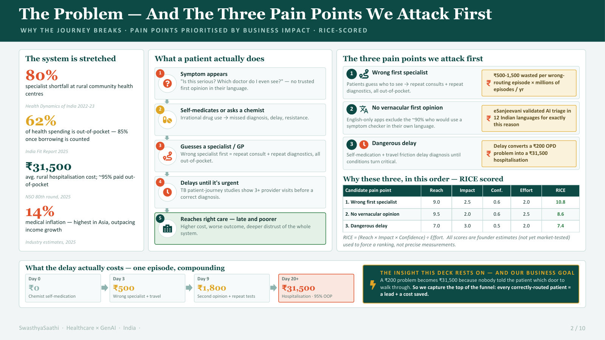
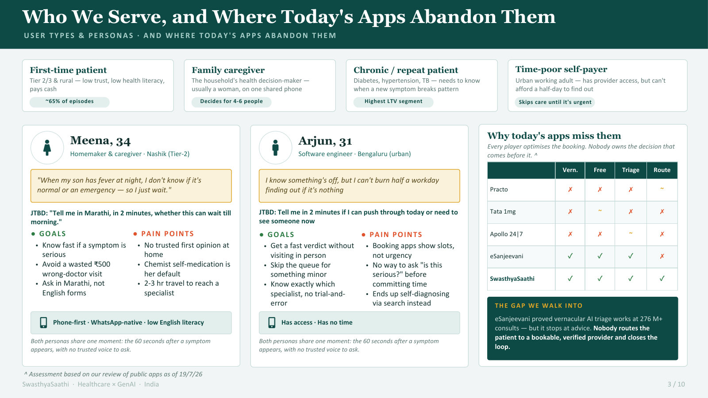
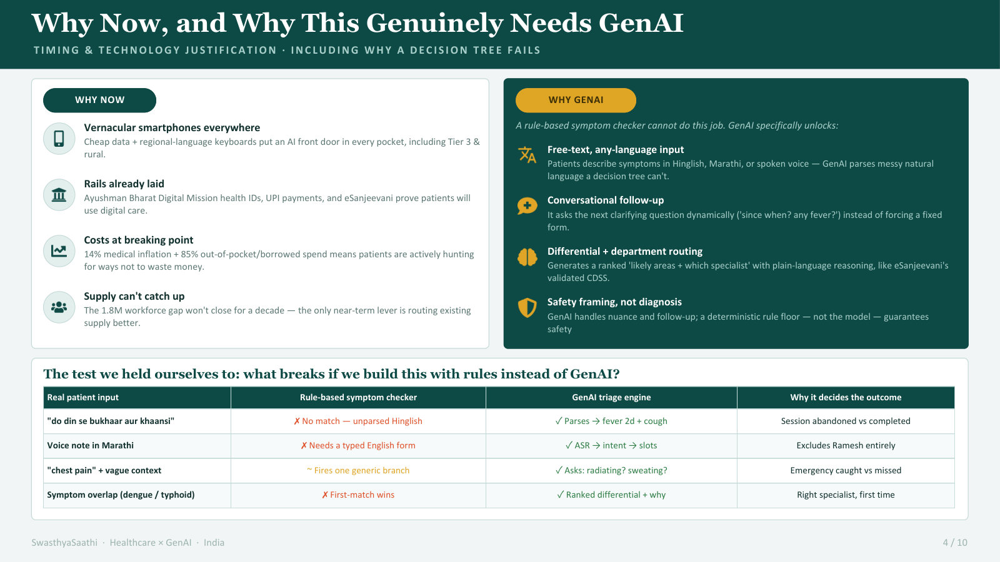
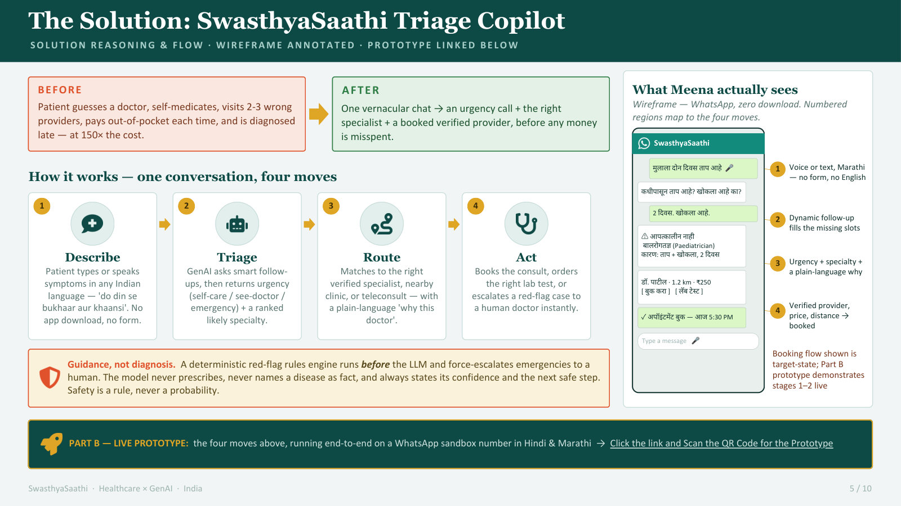
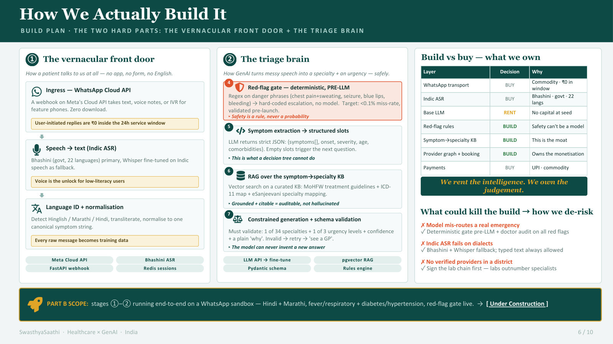
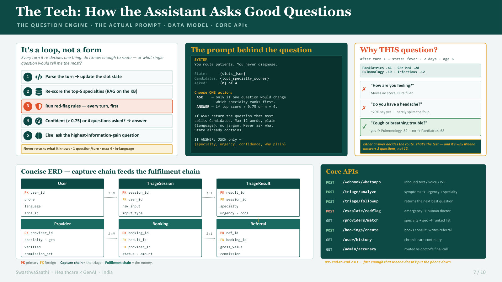
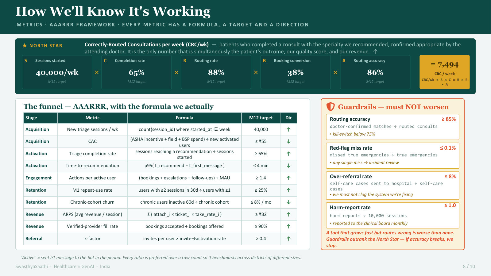
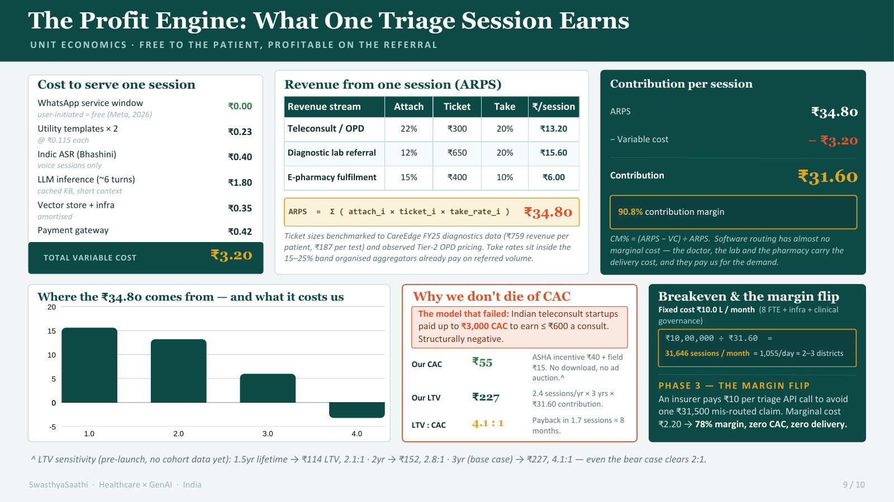
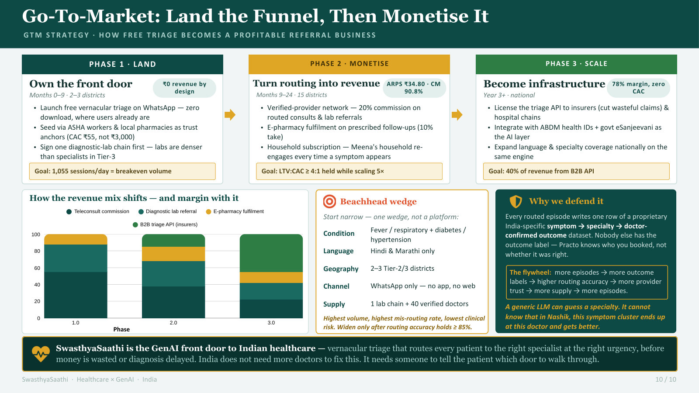

Case study · GenAI · Healthcare
SwasthyaSaathi: the AI front door to Indian healthcare
A vernacular triage assistant that listens to symptoms in Hindi, Marathi or English, catches emergencies before any AI call, and routes each patient to the right specialist at the right urgency, before a single rupee is misspent.
- Type
- Product case study + working build
- Languages
- English, Hindi, Marathi
- Stack
- React, Express, MongoDB, Gemini
- Status
- Live web app, Android build
The first chat can take up to a minute while the free-tier server wakes up.
The problem: India's broken first mile of care
When symptoms appear, patients in Tier 2/3 towns and rural areas have no trusted first opinion in their own language. They self-medicate at the local chemist or guess a specialist, which leads to repeat consultations, duplicate tests and dangerous delays. A ₹200 outpatient issue can turn into a ₹31,500 hospital stay.
Capturing the top of the healthcare funnel helps everyone: patients avoid wasted consultations, verified doctors and labs get high-intent referrals, and overloaded doctors stop doing triage by hand.
Who it's for
Meena, 34 · homemaker and caregiver, Nashik
WhatsApp-native, low English literacy. Needs to know quickly whether a family member's symptom is an emergency. Today she has no trusted opinion at home and defaults to the chemist.
Ramesh, 58 · farmer, rural Madhya Pradesh
Diabetic and hypertensive, low digital literacy. Needs voice-first help in his own language to reach the right specialist without being bounced between clinics.
The solution: a four-step triage loop
A conversational, vernacular interface, WhatsApp-native in the full vision, that takes a patient from symptom to the right care.
- 1 · DescribeThe patient types or speaks symptoms in their own language, including Hinglish.
- 2 · TriageGenAI asks one clarifying question at a time and grades urgency: self-care, see a doctor, or emergency.
- 3 · RouteMatches a nearby verified specialist, with the reasoning in plain language.
- 4 · ActBooks the consult or test, or hands red-flag cases to a human doctor.
Why this needs GenAI, not a decision tree
- Free text in any language: it understands dialects and code-mixed speech instead of forcing a form.
- Context: it asks "Since when?" or "Is there a rash?" only when the answer changes the route.
- Differential reasoning: a ranked list of likely specialties, explained simply.
- Safety framing: outputs are guidance, never a diagnosis.
The deck
Problem, personas, why now, the solution, the build plan, the question engine, metrics, unit economics and go-to-market, in ten slides.










Build update: from a broken prototype to a live app
The original Replit prototype stopped working, so I rebuilt it from the exported code and extended it from a triage chat into the full Describe → Triage → Route → Act loop.
- Working triage again: the old Gemini model had been retired, so every reply failed. The model is now configurable, with retry and fallback when one is overloaded.
- Safer red-flag gate: chest pain, trouble breathing, seizure, heavy bleeding and unconsciousness, in all three languages, trigger a hard-coded "call 112" screen before any LLM call. I widened the patterns after finding that "trouble breathing" slipped through.
- Provider matching and booking: verified doctors by specialty and city or distance; pick a slot, get a reference code; double-booking is blocked in the database.
- Hosted web app and Android build: the React app is public, and the same code is wrapped with Capacitor into an APK built by GitHub Actions.
- Cold-start handling: the free server sleeps when idle, so the app waits, retries and says "waking up the server" instead of failing.
- Android / web appReact, wrapped with Capacitor
- Red-flag gateRules run before any LLM call
- API on RenderExpress + TypeScript
- GeminiTriage, with model fallback
- MongoDB AtlasSessions, providers, bookings
| Endpoint | Method | What it does |
|---|---|---|
/triage/analyze | POST | Takes symptom text and returns urgency plus a likely specialty |
/triage/followup | POST | Serves the next clarifying question in the conversation |
/providers/match | GET | Verified providers for the specialty, near the patient |
/bookings/create | POST | Books a consultation, test or teleconsultation |
/escalate/redflag | POST | Skips the LLM and hands off to a human doctor |
/user/history | GET | Past triage results for chronic-care continuity |
Product decisions worth noting
- Safety is deterministic, not generative. Emergencies are caught by rules, so the LLM can never talk a patient out of one.
- Honest about data. Providers and bookings are labelled demo; no real appointment is made. Onboarding and verifying real providers is the next product problem.
- Reliability as UX. Three failure modes (retired model, overloaded model, sleeping server) each became a handled state instead of a generic error.
Success metrics
| Level | Metric | Why |
|---|---|---|
| North Star | Correctly routed consultations per week | Consults where the doctor confirms the recommended specialty was right |
| Engagement | Session completion; 30-day repeat use | Repeat use matters most for chronic patients |
| Business | Referral revenue per routed consult; provider fill rate | The referral is how free triage pays for itself |
| Guardrails | Red-flag miss rate (must stay ~0); over-referral rate | Never miss an emergency, and don't flood emergency rooms with minor cases |
Go-to-market and defensibility
- Land: free, zero-download vernacular triage on WhatsApp, seeded in Tier 2/3 districts through ASHA workers and local pharmacies.
- Monetise: commissions from verified clinics, labs and e-pharmacies for routed patients.
- Scale: license the triage API to insurers and integrate with the Ayushman Bharat Digital Mission.
Data moat: every completed consult adds to an India-specific symptom → specialty → outcome dataset that generic LLMs can't easily copy.
Risks
- Accuracy vs clinical risk: wrong triage could delay care. Mitigation: clinical validation sets, and a rules engine for red flags in parallel.
- Trust: rural users distrust digital-only services. Mitigation: pharmacies and ASHA workers as the physical on-ramp.
Status
Done: triage, red-flag gate, provider matching, booking, hosted web app, Android debug build, backend. Not yet tested on a real phone. Not built yet: voice input, WhatsApp and IVR, chronic-care history, human-doctor handoff, referral tracking, clinical validation.
Skills this shows
- GenAI product architecture
- Safety guardrails
- System design: APIs and data model
- Vernacular persona design
- AARRR metrics with guardrails
- Go-to-market and moats
- Shipping a working build